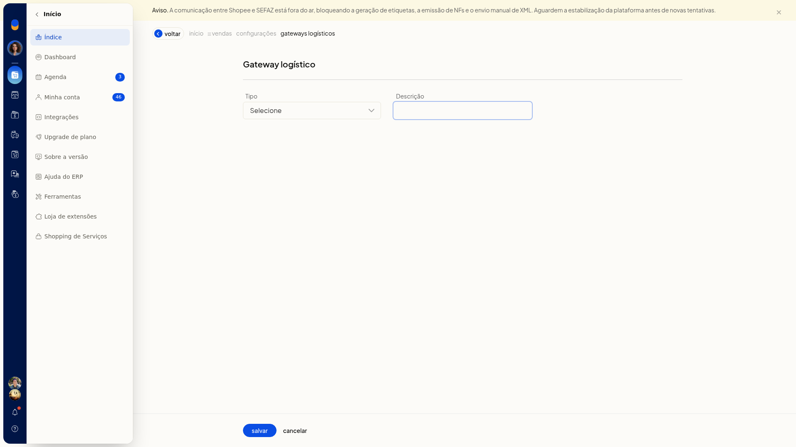
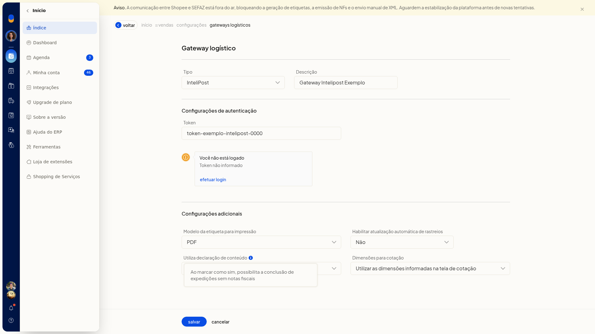
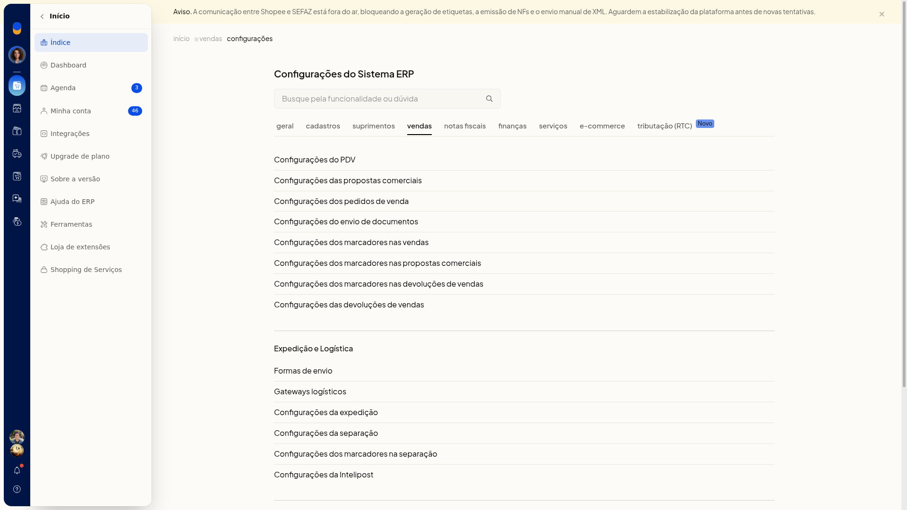
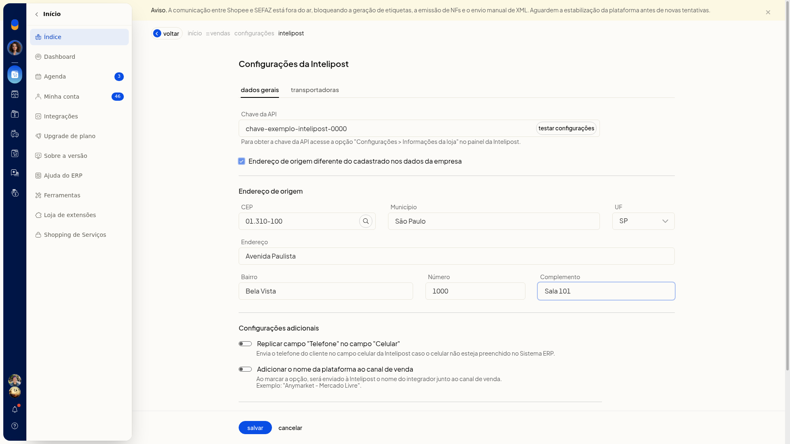
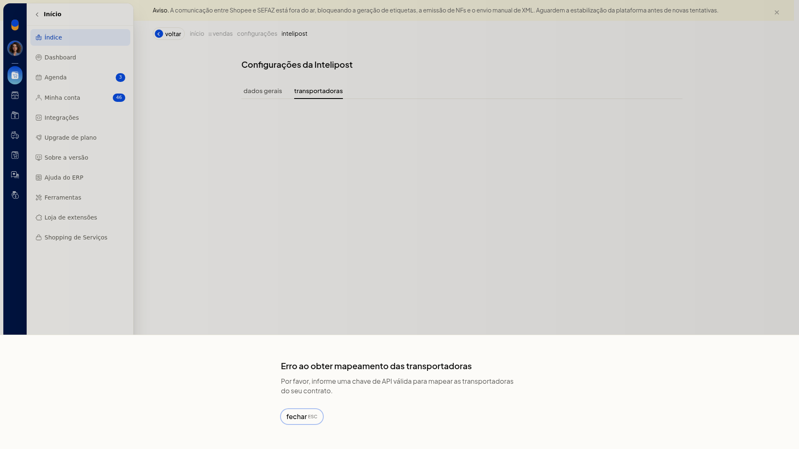

Gateways logísticos: o que são e como instalar
Gateways logísticos no ERP da Olist é a tela em que você consulta e inclui a integração com uma plataforma de frete. Você escolhe o tipo, informa a descrição e, no caso da InteliPost, o token e as opções de etiqueta, rastreio, declaração de conteúdo e dimensões.
Na mesma área, Configurações da Intelipost guarda a chave de API, um endereço de origem opcional e as opções de telefone, canal de venda e o link para marcar pedidos como entregues.
Pré-requisitos
- Tenha o token da conta Intelipost para instalar o gateway InteliPost.
- Tenha a chave de API para Configurações da Intelipost. No painel da Intelipost, busque a chave em Configurações > Informações da loja.
- Se a opção não aparecer para você, peça acesso ao administrador da conta.
Importante
- A aba Transportadoras só obtém o mapeamento com uma chave de API válida.
- Em Utiliza declaração de conteúdo, Sim possibilita a conclusão de expedições sem notas fiscais.
Instruções
Incluir um gateway logístico
-
Acesse Configurações > Configurações ERP. Na aba Vendas, na seção Expedição e Logística, clique em Gateways logísticos.
-
A lista mostra as colunas Descrição e Integração. Clique em Incluir gateway logístico.

-
Em Tipo, escolha a integração: Melhor Envio, Frenet, Datafrete, Frete Rápido, Flixlog, SmartEnvios (beta), Super Frete (beta) ou InteliPost. Preencha a Descrição. Nenhum campo deste formulário é obrigatório.

-
Com InteliPost selecionado, informe o Token. Sem token, a tela mostra Você não está logado / Token não informado e o link efetuar login.
-
Escolha o Modelo da etiqueta: PDF ou ZPL.
-
Em Habilitar atualização automática de rastreios, escolha Sim ou Não.
-
Em Utiliza declaração de conteúdo, escolha Sim ou Não.

-
Escolha a origem das dimensões: Utilizar as dimensões informadas na tela de cotação ou Utilizar as dimensões dos produtos.

-
Clique em Salvar para concluir a inclusão. Para descartar e voltar à lista, clique em Cancelar.
Configurar a Intelipost
-
Acesse Configurações > Configurações ERP. Na aba Vendas, na seção Expedição e Logística, clique em Configurações da Intelipost.

-
Na aba Dados Gerais, preencha Chave da API.

-
Se o envio deve sair de outro endereço, marque Endereço de origem diferente do cadastrado nos dados da empresa. Preencha CEP, Município, UF, Endereço, Bairro, Número e Complemento.


-
Se quiser, marque Replicar campo "Telefone" no campo "Celular". O telefone do cliente é enviado no celular da Intelipost quando o celular está vazio no ERP.
-
Se quiser, marque Adicionar o nome da plataforma ao canal de venda. O envio leva o nome do integrador mais o canal, como no exemplo Anymarket - Mercado Livre.
-
Em Marcação de pedidos como entregues, use o botão de copiar para enviar o link à Intelipost.

-
Abra a aba Transportadoras para obter o mapeamento das transportadoras. Sem chave válida, a tela mostra Erro ao obter mapeamento das transportadoras — informe uma chave de API válida. Clique em Fechar para voltar ao formulário.

-
Clique em salvar para gravar. Voltar retorna à aba Vendas sem gravar o que foi digitado. cancelar também está na tela, junto de testar configurações.
Informações adicionais
- A lista pode ter mais de um gateway da mesma integração, cada um com descrição e tipo.
- No menu de ações da linha, a opção é Excluir.